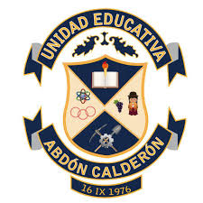
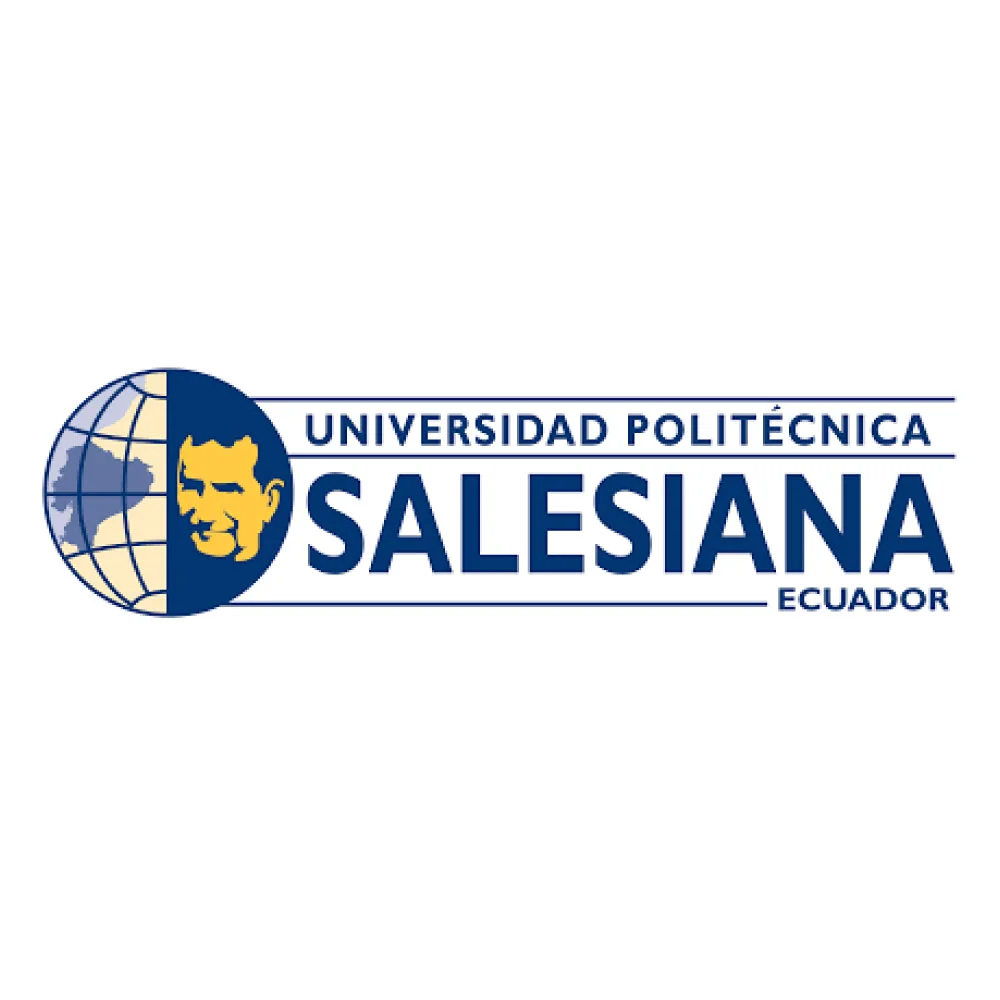

Mi trayectoria académica comenzó en 2013, cuando ingresé al colegio Abdón Calderón, un lugar donde sentí que realmente pude explorar mis primeros intereses y fortalecer los valores que me acompañan hasta hoy. Durante mis años en este colegio, no solo adquirí una formación sólida en diversas materias, sino que también desarrollé habilidades que me servirían a lo largo de mi vida. Fue en este espacio donde tuve la oportunidad de graduarme en Ciencias Generales en 2019, un logro que representó un importante paso en mi formación.
Tras terminar la secundaria, decidí dar el siguiente paso hacia la educación superior. En 2022, ingresé a la Universidad Politécnica Salesiana, una institución que me ofreció la oportunidad de profundizar n mis intereses académicos y profesionales. Actualmente, estoy cursando el 6to semestre de la carrera de Negocios Digitales, una disciplina que me apasiona cada vez más, ya que conecta dos de mis grandes intereses: el mundo de los negocios y la tecnología. A lo largo de estos años universitarios, he podido aprender de conceptos claves en áreas como la estrategia digital, marketing online, e-commerce y analítica de datos, lo cual considero fundamental para la era en la que vivimos.
La carrera de Negocios Digitales me ha brindado una nueva perspectiva sobre el futuro del comercio y la interacción digital. Los conocimientos adquiridos hasta ahora me han permitido poner en práctica diversas habilidades en proyectos y actividades tanto dentro como fuera de la universidad, lo que me ha ayudado a construir una base sólida para mi futuro profesional.
Este viaje educativo no ha sido solo una acumulación de conocimientos teóricos, sino también una experiencia que me ha permitido crecer como persona, aprender a trabajar en equipo, y a comprender la importancia de la innovación y la adaptación en un mundo tan cambiante. Estoy emocionado por todo lo que aún me queda por aprender y lograr, y espero poder aplicar todo lo adquirido para hacer una diferencia en el mundo de los negocios digitales.